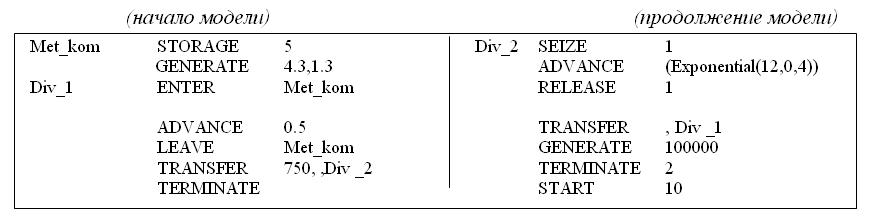
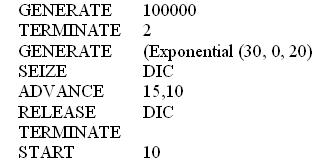
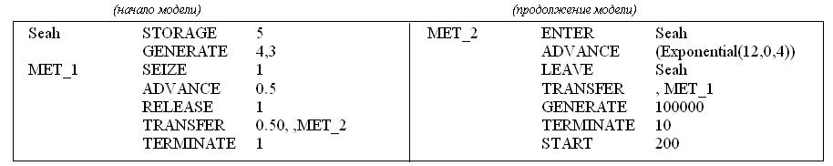

Сколько заявок в среднем поступит в моделируемую СМО за время моделирования?

50000
Чему равна загрузка прибора DIC?
0,525
По какому закону распределены интервалы времени между заявками в потоке, входящем в прибор DIC?
по равномерному
Чему равен средний интервал времени между заявками во входящем в прибор DIC потоке?
20
По какому закону распределена длительность обслуживания заявок в приборе DIC?
по детерминированому
Чему равна интенсивность входящего в прибор DIC потока заявок?
0,05
Чему равна средняя длительность обслуживания заявок в приборе DIC?
10,5
Чему равно число обслуживающих приборов в системе?
1
По какому закону распределены интервалы времени между заявками во входящем в СеМО потоке?

по равномерному
Сколько заявок в среднем поступит в моделируемую СеМО за время моделирования (ответ округлить до целого)?
116279
Сколько узлов содержит моделируемая СеМО?
2
Сколько одноканальных узлов содержит моделируемая СеМО?
1
Чему равен коэффициент передачи узла, в котором установлено устройство с именем Met_kom?
4
Чему равен коэффициент передачи узла, в котором установлен прибор c именем "1"?
3
По какому закону распределена длительность обслуживания заявок в узле, в котором установлено устройство с именем Met_kom?
по детерминированному
По какому закону распределена длительность обслуживания заявок в узле, в котором установлен прибор с именем "1"?
по экспоненциальному
Чему равно количество обслуживающих приборов в узле с устройством по имени "Met_kom"?
5
Чему равно количество обслуживающих приборов в узле с устройством по имени "1"?
1
По какому закону распределены интервалы времени между заявками в потоке, входящем в прибор DIC?

по экспоненциальному
Сколько заявок в среднем поступит в моделируемую СМО с прибором DIC за время моделирования ?
25000
Чему равна загрузка прибора DIC?
0,75
Чему равен средний интервал времени между заявками во входящем в прибор DIC потоке?
20
По какому закону распределена длительность обслуживания заявок в приборе DIC?
по равномерному
Чему равна интенсивность входящего в прибор DIC потока заявок?
0,05
Чему равна средняя длительность обслуживания заявок в системе?
15
Чему равно число обслуживающих приборов в системе?
1
Сколько заявок в среднем поступит в моделируемую СeМО за время моделирования?

200
По какому закону распределены интервалы времени между заявками во входящем в СеМО потоке?
по равномерному
Сколько узлов содержит сетевая модель?
2
Чему равен коэффициент передачи узла c прибором по имени "1"?
2
Чему равен коэффициент передачи узла с устройством по имени "Seah"?
1
По какому закону распределена длительность обслуживания заявок в приборе с именем "1"?
по детерминированному
По какому закону распределена длительность обслуживания заявок в устройстве с именем Seah?
по экспоненциальному
Чему равно количество обслуживающих приборов в первом узле?
1
Чему равно количество обслуживающих приборов во втором узле?
5
Чему равна средняя длительность обслуживания заявок в первом узле?
0,5
Чему равна средняя длительность обслуживания заявок во втором узле?
4
Чему равна интенсивность обслуживания заявок в первом узле?
2
Чему равна интенсивность обслуживания заявок во втором узле?
0,25
Чему равен интервал времени между заявками во входящем в СеМО потоке?
4
Чему равна интенсивность источника заявок?
0,25
Чему равна загрузка первого узла?
0,25
Чему равна загрузка второго узла?
0,2
Чему равно среднее число работающих приборов в первом узле?
0,25
Чему равно среднее число работающих приборов во втором узле?
1
Чему равно среднее число простаивающих приборов в первом узле?
0,75
Чему равно среднее число простаивающих приборов во втором узле?
4
Чему равен коэффициент простоя первого узла?
0,75
Чему равен коэффициент простоя второго узла?
0,8
Чему равна интенсивность поступления заявок в первый узел?
0,5
Чему равна интенсивность поступления заявок во второй узел?
0,25
Чему равна средняя длительность обслуживания заявок в первом узле?
0,5
Чему равна средняя длительность обслуживания заявок во втором узле?
4
Чему равна интенсивность обслуживания заявок в первом узле?
2
Чему равна интенсивность обслуживания заявок во втором узле?
0,25
Чему равен интервал времени между заявками во входящем в СеМО потоке?
4,3
Сколько в среднем пройдет заявок через моделируемую СеМО за время моделирования?

50000
По какому закону распределены интервалы времени между поступающими в систему заявками 1-го класса?
по экспоненциальному
По какому закону распределены интервалы времени между поступающими в систему заявками 2-го класса?
по детерминированному
Чему равен средний интервал времени между поступающими в систему заявками 1-го класса?
4
Чему равен средний интервал времени между поступающими в систему заявками 2-го класса?
2,5
Чему равна интенсивность поступающих в систему заявок 1-го класса?
0,25
Чему равна интенсивность поступающих в систему заявок 2-го класса?
0,4
Чему равно число узлов в модели?
1
Чему равно количество обслуживающих приборов в системе?
1
Чему равна загрузка прибора M_ts, создаваемая заявками 1-го класса?
1
Чему равна загрузка прибора M_ts, создаваемая заявками 2-го класса?
1
Чему равен коэффициент простоя прибора M_ts, в результате нагрузки, создаваемой заявками 1-го класса?
0
Чему равен коэффициент простоя прибора M_ts, в результате нагрузки, создаваемой заявками 2-го класса?
0
Чему равна нагрузка прибора M_ts, создаваемая заявками 2-го класса?
2
Чему равна загрузка прибора M_ts?
1
Чему равен коэффициент простоя прибора M_ts?
0
С помощью какого оператора создаются транзакты в GPSS-модели?
GENERATE
С помощью какого оператора уничтожаются транзакты в GPSS-модели?
TERMINATE
С помощью какого оператора осуществляется задержка транзакта на заданное время в GPSS-модели?
ADVANCE
С помощью какого оператора осуществляется занятие транзактом одноканального прибора в GPSS-модели?
SEIZE
С помощью какого оператора осуществляется удаление транзакта из одноканального прибора в GPSS-модели?
RELEASE
С помощью какого оператора осуществляется занесение транзакта в очередь в GPSS-модели?
QUEUE
С помощью какого оператора осуществляется удаление транзакта из очереди в GPSS-модели?
DEPART
С помощью какого оператора осуществляется вход транзакта в многоканальное устройство в GPSS-модели?
ENTER
С помощью какого оператора осуществляется удаление транзакта из многоканального устройства в GPSS-модели?
LEAVE
После какого GPSS-оператора транзакт наверняка перейдет в блок с меткой haha?
TRANSFER ,haha
TEST NE 5,5,haha
С помощью какого оператора описывается емкость многоканального устройства в GPSS-модели?
STORAGE
С помощью какой команды запускается процесс моделирования в GPSS World?
START
Что такое RN1 в системе GPSS?
генератор случайных чисел №1
Как называется динамический объект GPSS-модели, движущийся в заданной алгоритмом моделирования последовательности?
транзакт
С помощью какого GPSS-блока значение некоторой случайной величины заносится в таблицу для построения гистограммы этой величины?
tabulate
С помощью какой системной переменной можно получить текущее модельное время?
C1
AC1
Как изменяется модельное время в GPSS-модели?
дискретно, до ближайшего события
Сколько транзактов может находиться в GPSS-модели одновременно?
1
несколько
Укажите методы формирования равномерно распределенных случайных величин
метод квадратов
метод произведений
мультипликативный конгруэнтный метод
Укажите виды проверки программных генераторов равномерно распределенных случайных чисел
проверка на периодичность
проверка на случайность
проверка на равномерность
Как называется тип проверки генератора случайных чисел, при котором производится разбиение диапазона распределения на несколько интервалов и подсчет количества попаданий случайных чисел в выделенные интервалы.
Тест проверки частот.
Как называется тип проверки генератора случайных чисел, при котором производится проверка вероятности появления единицы в каждом из разрядов вырабатываемого генератором случайного числа (независимо для каждого разряда).
Тест проверки пар.
Как называется тип проверки генератора случайных чисел, при котором производится проверка среднего количества единиц в двоичном представлении выработанного случайного числа.
Тест проверки комбинаций.
Как называется тип проверки генератора случайных чисел, при котором производится проверка количества различных длин последовательностей одинаковых значений разрядов в двоичном представлении сгенерированного случайного числа.
Тест проверки серий.
Какие элементы входят в состав СМО?
заявки
накопители
обслуживающие приборы
Сколько заявок одновременно может обслуживать один обслуживающий прибор?
1
По числу обслуживающих приборов СМО бывают ...
одноканальные
многоканальные
По ёмкости накопителя СМО бывают ...
с потерями
с отказами
без потерь
По количеству классов заявок СМО бывают ...
с однородным потоком
с неоднородным потоком
Как называются СМО, в которых заявка, поступившая в систему и заставшая все обслуживающие приборы занятыми, теряется?
с отказами
Как называются СМО, в которых поступившая заявка теряется, если она застает накопитель заполненным до конца?
с потерями
Как называются СМО, в которых для любой поступившей заявки всегда найдется место в накопителе для ожидания?
без потерь
Как называются СМО без накопителя?
с отказами
Как называются СМО с накопителем ограниченной ёмкости?
с потерями
Как называются СМО с накопителем неограниченной ёмкости?
без потерь
Установите соответствие между классами СМО.
СМО без накопителя ::: СМО с отказами
СМО с накопителем ограниченной ёмкости ::: СМО с потерями
СМО с накопителем неограниченной ёмкости ::: СМО без потерь
СМО с одним обслуживающим прибором ::: СМО одноканальная
СМО с несколькими обслуживающими приборами ::: СМО многоканальная
СМО с одним классом заявок ::: СМО с однородным потоком
СМО с несколькими классами заявок ::: СМО с неоднородным потоком
Укажите синонимы термина "ЗАЯВКА".
требование
запрос
вызов
клиент
Укажите синонимы термина "ОБСЛУЖИВАЮЩИЙ ПРИБОР".
устройство
канал
линия
Совокупность заявок, распределенных во времени, образуют ...
поток заявок
Задержка заявки на некоторое время в обслуживающем приборе - это ...
обслуживание
Что представляет собой обслуживание заявки в приборе СМО?
задержка заявки на некоторое время
Как называется совокупность мест для ожидания заявок перед обслуживающим прибором в СМО?
накопитель
Количество мест для ожидания заявок в СМО определяет ...
ёмкость накопителя
Заявки, находящиеся в накопителе и ожидающие обслуживания, образуют ...
очередь заявок
Количество заявок, ожидающих обслуживания в накопителе, определяет ...
длину очереди
Правило занесения поступающих заявок в накопитель - это ...
дисциплина буферизации
Правило выбора заявок из очереди для обслуживания в приборе - это ...
дисциплина обслуживания
Как называется преимущественное право заявок одного класса по отношению к заявкам других классов?
приоритет
Какие предположения обычно используются при рассмотрении СМО?
заявка, поступившая в систему, мгновенно попадает на обслуживание, если прибор свободен
в приборе на обслуживании в каждый момент времени может находиться только одна заявка
после завершения обслуживания какой-либо заявки в приборе очередная заявка выбирается на обслуживание из
поступление заявок в СМО и длительности их обслуживания не зависят от того, сколько заявок уже находится в
длительность обслуживания заявок не зависит от интенсивности поступления заявок в систему
Совокупность взаимосвязанных систем массового обслуживания, в среде которых циркулируют заявки - это ...
СеМО
Путь движения заявок в СеМО называется ...
маршрутом
Что является основной характеристикой потока заявок?
интенсивность потока
Среднее число заявок, проходящих через некоторую границу за единицу времени, называется ...
интенсивность потока
Что представляет собой величина, обратная интенсивности потока заявок?
средний интервал времени между двумя последовательными заявками
Что представляет собой величина, обратная среднему интервалу между последовательными заявкам в потоке?
интенсивности потока заявок
Что представляет собой величина, обратная средней длительности обслуживания заявок?
интенсивность обслуживания заявок
Что представляет собой величина, обратная интенсивности обслуживания заявок?
средняя длительность обслуживания в приборе
Как называется поток, в котором интервалы времени между соседними заявками принимают определенные заранее известные значения?
детерминированный
Как называется поток, в котором интервалы времени между соседними заявками принимают определенные заранее известные значения?
детерминированный
Как называется поток, в котором интервалы времени между соседними заявками принимают известные одинаковые значения?
регулярный
Как называется поток, в котором интервалы времени между соседними заявками равны?
регулярный
Как называется поток, в котором интервалы времени между соседними заявками принимают заранее неизвестные значения?
случайный
Как называется поток, в котором интервалы времени между соседними заявками принимают заранее неизвестные значения?
случайный
Как называется случайный поток, в котором все интервалы между последовательными заявками независимы в совокупности и описываются разными законами распределений?
с ограниченным последействием
Как называется случайный поток, в котором все интервалы между последовательными заявками независимы и описываются одинаковыми законами распределений?
рекуррентный
Как называется поток, в котором интенсивность поступления заявок и закон распределения интервалов между последовательными заявками не меняются со временем?
стационарный
Как называется поток, в котором интенсивность поступления заявок и закон распределения интервалов между последовательными заявками не меняются со временем?
стационарный
Как называется поток, в котором интенсивность поступления заявок и/или закон распределения интервалов между последовательными заявками меняются со временем?
нестационарный
Как называется поток, в котором интенсивность поступления заявок и/или закон распределения интервалов между последовательными заявками меняются со временем?
нестационарный
Как называется поток, в котором интенсивность поступления заявок изменяется со временем?
нестационарный
Как называется поток, в котором закон распределения интервалов между последовательными заявками изменяется со временем?
нестационарный
Как называется поток заявок, в котором в каждый момент времени может появиться только одна заявка?
ординарным
Как называется поток заявок, в котором в каждый момент времени может появиться только одна заявка?
ординарный
Как называется поток заявок, в котором в каждый момент времени может появиться одна или несколько заявок?
неординарный
Как называется поток заявок, в котором момент поступления очередной заявки не зависит от того, когда и сколько заявок поступило до этого момента?
без последействия
Как называется поток, в котором момент поступления очередной заявки не зависит от того, когда и сколько заявок поступило до этого момента?
без последействия
Как называется стационарный ординарный поток заявок без последействия?
простейший
Как называется стационарный ординарный поток заявок без последействия?
простейший
Какими свойствами обладает простейший поток?
стационарный
ординарный
без последействия
По какому закону распределены интервалы времени между заявками в простейшем потоке?
экспоненциальному
По какому закону распределены интервалы времени между заявками в простейшем потоке?
экспоненциальный
По какому закону распределено число заявок, поступающих за некоторый заданный промежуток времени в простейшем потоке?
Пуассона
По какому закону распределено число заявок, поступающих за некоторый заданный промежуток времени в простейшем потоке?
Пуассона
Какие замечательные особенности присущи простейшему потоку заявок?
Сумма независимых простейших потоков образует простейший поток
Вероятностное разрежение простейшего потока заявок приводит к образованию простейшего потока
Предположение о простейшем потоке заявок во многих случаях позволяет получить в явном виде аналитические
Какой поток образуется в результате суммирования нескольких независимых стационарных ординарных потоков заявок?
простейший
Какой поток образуется в результате вероятностного разрежения простейшего потока заявок?
простейший
Какой поток образуется в результате детерминированного разрежения простейшего потока заявок?
поток Эрланга
По какому закону распределены интервалы между последовательными заявками в потоке, образованном в результате вероятностного разрежения простейшего потока заявок?
экспоненциальному
По какому закону распределены интервалы между последовательными заявками в потоке, образованном в результате детерминированного разрежения простейшего потока заявок?
Эрланга
По какому закону распределены интервалы между последовательными заявками в потоке, образованном в результате суммирования нескольких независимых стационарных ординарных потоков заявок?
экспоненциальному
По какому закону распределены интервалы между последовательными заявками в потоке, образованном в результате суммирования независимых простейших потоков заявок?
экспоненциальному
Чему равен коэффициент вариации интервалов между последовательными заявками в потоке, образованном в результате суммирования нескольких независимых стационарных ординарных потоков заявок?
1
Чему равен коэффициент вариации интервалов между последовательными заявками в потоке, образованном в результате суммирования нескольких независимых простейших потоков заявок?
1
Чему равен коэффициент вариации интервалов между последовательными заявками в простейшем потоке заявок?
1
Чему равен коэффициент вариации интервалов между последовательными заявками в регулярном потоке?
0
Чему равен коэффициент вариации интервалов между последовательными заявками в эрланговском потоке?
между 0 и 1
Чему равен коэффициент вариации интервалов между последовательными заявками в гиперэкспоненциальном потоке?
больше 1
В каких случаях оправдано предположение о неограниченной ёмкости накопителя в СМО?
когда вероятность потери заявки в реальной системе из-за переполнения ограниченной ёмкости накопителя меньше 0,001
Какие дисциплины обслуживания относятся к дисциплинам одиночного режима?
обслуживание в порядке поступления
обслуживание в обратном порядке
обслуживание в случайном порядке
с относительными приоритетами
с абсолютными приоритетами
Какие дисциплины обслуживания относятся к дисциплинам группового режима?
с чередующимися приоритетами
обслуживание по расписанию
Как называется способ (режим) назначения заявок на обслуживания, при котором всякий раз на обслуживание назначается только одна заявка?
одиночный режим
Как называется способ (режим) назначения заявок на обслуживания, при котором всякий раз на обслуживание назначается группа заявок одной очереди?
групповой режим
Сколько заявок одновременно выбирается из очереди на обслуживание при ДО группового режима?
1
Сколько заявок одновременно выбирается из очереди на обслуживание при ДО одиночного режима?
1
Укажите русскоязычную аббревиатуру дисциплины обслуживания, когда на обслуживание из очереди выбирается заявка, поступившая в систему раньше других.
ОПП
Укажите русскоязычную аббревиатуру дисциплины обслуживания, которая соответствует англоязычной аббревиатуре FIFO.
ОПП
Укажите русскоязычную аббревиатуру дисциплины обслуживания, которая соответствует англоязычной аббревиатуре LIFO.
ООП
Какие дисциплины обслуживания относятся к бесприоритетным?
ООП
ОПП
ОЦП
ОСП
Какие дисциплины обслуживания относятся к приоритетным?
АП
ОП
СП
ОР
ЧП
Какие дисциплины обслуживания относятся к бесприоритетным дисциплинам одиночного режима?
ОПП
ООП
ОСП
Какие дисциплины обслуживания относятся к приоритетным дисциплинам одиночного режима?
ОП
АП
СП
Какие дисциплины обслуживания относятся к бесприоритетным дисциплинам группового режима?
ОЦП
Какие дисциплины обслуживания относятся к приоритетным дисциплинам группового режима?
ОР
ЧП
Как называется дисциплина обслуживания, при которой приоритеты учитываются только при выборе новой заявки?
ОП
При какой дисциплине возможно прерыванние обслуживания?
АП
Как называются приоритеты, которые могут изменяться в процессе функционирования системы?
динамические
Как называются приоритеты, которые не изменяются в процессе функционирования системы?
статические
Как называются СеМО, в которых процессы поступления и/или обслуживания заявок носят случайный характер?
стохастические
Как называются СеМО, в которых процессы поступления и/или обслуживания заявок носят случайный характер?
стохастические
Как называются СеМО, в которых интервалы времени между поступающими заявками и длительности их обслуживания в узлах являются детерминированными величинами?
детерминированные
Как называются СеМО, в которых интенсивности потоков заявок в разных узлах, СеМО связаны линейной зависимостью?
линейные
Как называются СеМО, в которых интенсивности потоков заявок в разных узлах, СеМО связаны нелинейной зависимостью?
нелинейные
Как называются СеМО, в которых интенсивности потоков заявок в узлах связаны линейной зависимостью?
линейные
Как называется коэффициент пропорциональности, показывающий во сколько раз интенсивность потока заявок в некоторый узел сети отличается от интенсивности источника заявок?
коэффициент передачи
Коэффициент передачи можно трактовать как ...
среднее число попаданий заявки в данный узел за время ее нахождения в сети
В каких случаях СеМО будет нелинейной?
если в СеМО заявки теряютя
если в СеМО заявки размножаются
В каких случаях СеМО будет линейной?
если заявки не теряются
если заявки не размножаются
Что является основными признаками разомкнутых СеМО?
содержит один или несколько внешних независимых источников заявок
в СеМО одновременно может находиться любое число заявок
Что является основными признаками замкнутых СеМО?
не содержит внешние независимые источники заявок
в СеМО находится постоянное число заявок
Как называются СеМО, в которых циркулирует один класс заявок?
однородные
Как называются СеМО, в которых циркулирует несколько классов заявок?
неоднородные
Какие факторы обусловливают неоднородность СеМО?
разные длительности обслуживания заявок в узлах
наличие приоритетов между завками
разные маршруты заявок
Заявки в СеМО следует относить к разным классам, если они различаются ...
длительностями обслуживания хотя бы в одном из узлов
приоритетами
маршрутами
Заявки в СеМО представляются в виде одного класса, если они ...
имеют одинаковые длительности обслуживания в узлах сети
не имеют приоритетов по отношению к друг другу
имеют одинаковые маршруты
Для каких дисциплин обслуживания существует "защита от перегрузок"?
АП
ОП
СП
При каких дисциплинах обслуживания заявок средние времена ожидания заявок разных классов одинаковы?
БП
ОПП
ООП
ОСП
При какой дисциплине обслуживания среднее время ожидания заявок нескольких классов, объединенных в одну бесприоритетную группу, может быть различным?
СП
При каких дисциплинах обслуживания среднее время ожидания заявок более высокого приоритета может иметь большее значение, чем заявок низкого приоритета?
АП
СП
В одноканальную СМО поступают 2 простейших потока заявок с интенсивностями 0,1 и 0,2 заявок в секунду; средние длительности их обслуживания соответственно 2 и 4 секунды. Чему будет равно среднее время ожидания заявок 1-го класса при использовании бесприоритетной ДО?
бесконечности
В одноканальную СМО поступают 2 класса заявок с интенсивностями 0,1 и 0,2 заявок в секунду; длительности их обслуживания соответственно 2 и 3 секунды. Среднее время ожидания заявок при использовании бесприоритетной дисциплины обслуживания - 5 секунд. После введения приоритетов среднее время ожидания заявок 1-го класса стало равным 2 секундам. Чему равно среднее время ожидания заявок 2-го класса?
6
При какой дисциплине обслуживания заявки с одинаковыми приоритетами могут иметь разное время ожидания?
СП
В систему поступают заявки трех классов с интенсивностями 2, 1 и 0,5 заявок в секунду соответственно. При одновременном выполнении каких условий, среднее время пребывания заявок всех классов будет одинаково?
Одинаковые средние длительности обслуживания заявок всех классов
ДО БП
В систему поступают заявки трех классов с интенсивностями 2, 1 и 0,5 заявок в секунду соответственно. Интенсивности обслуживания заявок одинаковы и равны 5 заявкам в секунду. При одновременном выполнении каких условий, среднее время пребывания заявок класса 1 будет равно 0,2 секунды.
Заявки класса 1 имеют АП к заявкам других классов
Процессы поступления и обслуживания заявок класса 1 не являются случайными
В систему поступают два класса заявок. Интенсивность поступления заявок второго класса в К раз больше интенсивности поступления заявок первого класса. При использовании приоритетной ДО среднее время ожидания заявок первого класса по сравнению с ДО БП уменьшилось, а заявок второго класса увеличилось на ту же величину. При каких значениях К более высокий приоритет нужно назначать заявкам первого класса, чтобы суммарная очередь заявок оказалась меньше, чем при ДО БП?
К<1
При использовании ДО БП средние времена ожидания заявок первого и второго классов были равны 10 с. После введения приоритетов среднее время ожидания заявок первого класса стало равно 5 с, второго класса - 20 с. Определить коэффициент загрузки первого класса, если известно, что суммарная загрузка равна 0,9.
0,6
При использовании ДО БП средние времена ожидания заявок первого и второго классов были равны 10 с. После введения приоритетов среднее время ожидания заявок первого класса стало равно 5 с, второго класса - 20 с. Определить коэффициент загрузки второго класса, если известно, что суммарная загрузка равна 0,9.
0,3
При использовании ДО БП средние времена ожидания заявок первого и второго классов были равны 10 с. После введения приоритетов среднее время ожидания заявок первого класса стало равно 5 с, второго класса - 20 с. Определить среднее время ожидания заявок первого класса после введения других приоритетов, если известно, что суммарная загрузка равна 0,9, а среднее время ожидания заявок второго класса стало равно 24 с.
3
В систему поступают два класса заявок, длительности обслуживания которых распределены по экспоненциальному закону с одним и тем же средним значением. При использовании ДО ОП средние времена ожидания заявок соответственно равны 50 с и 5 с. После введения АП средние времена ожидания стали равны соответственно 60 с и 1 с. Чему равна интенсивность поступления заявок второго класса, если извествно, что интенсивность поступления заявок первого класса равна 0,2 заявкам в секунду?
0,5
В систему поступают два класса заявок, длительности обслуживания которых распределены по экспоненциальному закону с одним и тем же средним значением. При использовании ДО ОП средние времена ожидания заявок соответственно равны 50 с и 5 с. После введения АП средние времена ожидания стали равны соответственно 60 с и 1 с. Чему равна загрузка со стороны заявок первого класса, если извествно, что интенсивность поступления заявок первого класса равна 0,2 заявкам в секунду?
0,2
В систему поступают два класса заявок, длительности обслуживания которых распределены по экспоненциальному закону с одним и тем же средним значением. При использовании ДО ОП средние времена ожидания заявок соответственно равны 50 с и 5 с. После введения АП средние времена ожидания стали равны соответственно 60 с и 1 с. Чему равна загрузка со стороны заявок второго класса, если извествно, что интенсивность поступления заявок первого класса равна 0,2 заявкам в секунду?
0,5
В систему поступают два класса заявок, длительности обслуживания которых распределены по экспоненциальному закону с одним и тем же средним значением. При использовании ДО ОП средние времена ожидания заявок соответственно равны 50 с и 5 с. После введения АП средние времена ожидания стали равны соответственно 60 с и 1 с. Чему равно среднее время обслуживания заявок, если извествно, что интенсивность поступления заявок первого класса равна 0,2 заявкам в секунду?
1
В систему поступают два класса заявок, средние времена обслуживания которых одинаковы. При использовании ДО БП средние времена ожидания заявок равны 10 с. При использовании ДО ОП среднее время ожидания заявок первого класса равно 5 с, а второго класса - 12 с. Определить среднюю длину очереди заявок при использовании ДО ОП, если суммарная интенсивность поступления заявок в систему равна 0,7 заявок в секунду.
7
В систему поступают два класса заявок, средние времена обслуживания которых одинаковы. При использовании ДО БП средние времена ожидания заявок равны 10 с. При использовании ДО ОП среднее время ожидания заявок первого класса равно 5 с, а второго класса - 12 с. Определить интенсивность поступления заявок первого класса, если суммарная интенсивность поступления заявок в систему равна 0,7 заявок в секунду.
0,2
В систему поступают два класса заявок, средние времена обслуживания которых одинаковы. При использовании ДО БП средние времена ожидания заявок равны 10 с. При использовании ДО ОП среднее время ожидания заявок первого класса равно 5 с, а второго класса - 12 с. Определить интенсивность поступления заявок второго класса, если суммарная интенсивность поступления заявок в систему равна 0,7 заявок в секунду.
0,5
В систему поступают три класса заявок с одинаковыми интенсивностями. При использовании приоритетной ДО по сравнению с ДО БП среднее время ожидания изменялось следующим образом: для заявок 1-го класса уменьшилось в 2 раза, для заявок 2-го класса не изменилось. Чему равно отношение суммарной длины очереди при ДО БП к суммарной длине очереди при приоритетной ДО, если известно, что средняя длительность обслуживания заявок 3-го класса в 3 раза больше, чем заявок 1-го класса?
0,375
В систему М/М/1 поступают три класса заявок. При изменении ДО1 на ДО2 у заявок 1-го класса среднее время пребывания заявок уменьшилось, а у заявок 3-го класса увеличилось на одну и ту же величину, в то время как для заявок 2-го класса оно не изменилось. При переходе от ДО1 к ДО3 у заявок 1-го и 3-го классов среднее время пребывания увеличилось на одну и ту же величину, а у заявок 2-го класса уменьшилось на такую же величину. Определить коэффициент загрузки заявок 1-го класса, если известно, что суммарная загрузка системы равна 0,8.
0,2
В систему М/М/1 поступают три класса заявок. При изменении ДО1 на ДО2 у заявок 1-го класса среднее время пребывания заявок уменьшилось, а у заявок 3-го класса увеличилось на одну и ту же величину, в то время как для заявок 2-го класса оно не изменилось. При переходе от ДО1 к ДО3 у заявок 1-го и 3-го классов среднее время пребывания увеличилось на одну и ту же величину, а у заявок 2-го класса уменьшилось на такую же величину. Определить коэффициент загрузки заявок 2-го класса, если известно, что суммарная загрузка системы равна 0,8.
0,4
В систему М/М/1 поступают три класса заявок. При изменении ДО1 на ДО2 у заявок 1-го класса среднее время пребывания заявок уменьшилось, а у заявок 3-го класса увеличилось на одну и ту же величину, в то время как для заявок 2-го класса оно не изменилось. При переходе от ДО1 к ДО3 у заявок 1-го и 3-го классов среднее время пребывания увеличилось на одну и ту же величину, а у заявок 2-го класса уменьшилось на такую же величину. Определить коэффициент загрузки заявок 3-го класса, если известно, что суммарная загрузка системы равна 0,8.
0,2
В систему поступают два класса заявок. Интенсивность поступления заявок 1-го класса в 2 раза выше интенсивности поступления заявок 2-го класса, а средняя длительность обслуживания заявок 1-го класса в 2 раза меньше, чем заявок 2-го класса. При использовании ДО ОП среднее время ожидания заявок 1-го класса равно 5 с, а 2-го - 20 с. Определить среднее время ожидания заявок при использовании ДО БП.
12,5
В систему поступают два класса заявок. Интенсивность поступления заявок 1-го класса в 2 раза выше интенсивности поступления заявок 2-го класса, а средняя длительность обслуживания заявок 1-го класса в 2 раза меньше, чем заявок 2-го класса. При использовании ДО ОП среднее время ожидания заявок 1-го класса равно 5 с, а 2-го - 20 с. Определить отношение суммарной длины очереди при использовании ДО БП к суммарной длине очереди при использовании ДО ОП.
1,25
В двухузловой замкнутой СеМО циркулирует 1 заявка. Определить загрузку узла 1, если известно, что коэффициент простоя узла 1 равен 0,4.
0,6
В двухузловой замкнутой СеМО циркулирует 1 заявка. Определить загрузку узла 2, если известно, что коэффициент простоя узла 1 равен 0,4.
0,4
В двухузловой замкнутой СеМО циркулирует 1 заявка. Определить коэффициент простоя узла 2, если известно, что коэффициент простоя узла 1 равен 0,4.
0,6
В двухузловой замкнутой СеМО циркулирует 1 заявка. Определить загрузку узла 1, если известно, что загрузка узла 1 в 3 раза больше, чем загрузка узла 2.
0,75
В двухузловой замкнутой СеМО циркулирует 1 заявка. Определить загрузку узла 2, если известно, что загрузка узла 1 в 3 раза больше, чем загрузка узла 2.
0,25
В двухузловой замкнутой СеМО циркулирует 1 заявка. Определить коэффициент простоя узла 1, если известно, что загрузка узла 1 в 3 раза больше, чем загрузка узла 2.
0,25
В двухузловой замкнутой СеМО циркулирует 1 заявка. Определить коэффициент простоя узла 2, если известно, что загрузка узла 1 в 3 раза больше, чем загрузка узла 2.
0,75
В замкнутой двухузловой СеМО циркулирует одна заявка, которая последовательно переходит из одного узла в другой. Длительность обслуживания в узлах распределена по экспоненциальному закону с одним и тем же средним значением, равным 5с. По какому закону распределено время пребывания заявки в сети?
по закону Эрланга 2-го порядка
В замкнутой двухузловой СеМО циркулирует одна заявка, которая последовательно переходит из одного узла в другой. Длительность обслуживания в узлах распределена по экспоненциальному закону с одним и тем же средним значением, равным 5с. Определить производительность замкнутой СеМО.
0,1
В замкнутой двухузловой СеМО циркулирует одна заявка, которая последовательно переходит из одного узла в другой. Длительности обслуживания в узлах 1 и 2 сети соответственно равны 2 и 3 с. Определить загрузку узла 1 замкнутой СеМО.
0,4
В замкнутой двухузловой СеМО циркулирует одна заявка, которая последовательно переходит из одного узла в другой. Длительности обслуживания в узлах 1 и 2 сети соответственно равны 2 и 3 с. Определить загрузку узла 2 замкнутой СеМО.
0,6
В замкнутой двухузловой СеМО циркулирует одна заявка, которая последовательно переходит из одного узла в другой. Длительности обслуживания в узлах 1 и 2 сети соответственно равны 2 и 3 с. Определить коэффициент простоя узла 1 замкнутой СеМО.
0,6
В замкнутой двухузловой СеМО циркулирует одна заявка, которая последовательно переходит из одного узла в другой. Длительности обслуживания в узлах 1 и 2 сети соответственно равны 2 и 3 с. Определить коэффициент простоя узла 2 замкнутой СеМО.
0,4
В замкнутой двухузловой СеМО циркулирует одна заявка, которая последовательно переходит из одного узла в другой. Длительности обслуживания в узлах 1 и 2 сети соответственно равны 2 и 3 с. Определить среднее число заявок в узле 1 замкнутой СеМО.
0,4
В замкнутой двухузловой СеМО циркулирует одна заявка, которая последовательно переходит из одного узла в другой. Длительности обслуживания в узлах 1 и 2 сети соответственно равны 2 и 3 с. Определить среднее число заявок в узле 2 замкнутой СеМО.
0,6
В замкнутой двухузловой СеМО циркулирует одна заявка, которая последовательно переходит из одного узла в другой. Длительности обслуживания в узлах 1 и 2 сети соответственно равны 2 и 3 с. Определить производительность замкнутой СеМО.
0,2
В разомкнутую СеМО поступают заявки с интервалом 5 секунд. Среднее число заявок в сети равно 8. Определить среднее время пребывания заявок в сети.
40
В разомкнутую СеМО поступают заявки с интервалом 5 секунд. Среднее число заявок в сети равно 8. Определить интенсивность выходящего из сети потока заявок.
0,2
Интенсивность поступления заявок в разомкнутую трехузловую СеМО равна 2 заявки в секунду. Среднее число заявок в узлах СеМО соответственно равно: 2, 4 и 6. Определить среднее время пребывания заявок в сети.
6
Средние времена пребывания заявок в узлах трехузловой СеМО соответственно равны: 2, 4 и 6 секунд, а коэффициенты загрузок узлов равны 0,2; 0,6; 0,3. Определить ср.время пребывания заявок в сети, если известно, что длительности обслуживания заявок во всех узлах одинаковы и заявки попадают в узел 1 только 1 раз.
23
Известны вероятности состояний двухузловой замкнутой СеМО: P(0,4)=0,1; P(1,3)=0,4; P(2,2)=0,2; P(3,1)=0,1; P(4,0)=0,2, где состояние (i1,i2) задает число заявок в одноканальном узле 1 и трехканальном узле 2 соответственно. Определить среднее число заявок в СеМО, находящихся в состоянии ожидания.
1,1
Известны вероятности состояний трехузловой ЗСЕМО: Р(0,0,2)=0,1; P(0,1,1)=0,3; P(0,2,0)=0,4; P(1,0,1)=0,05; P(1,1,0)=0,05; P(2,0,0)=0,1. Длительности обслуживания заявок во всех одноканальных узлах одинаковы. Определить значение коэффициента передачи второго узла сети, если известно, что коэффициент передачи первого узла равен 2.
7,5
Известны вероятности состояний трехузловой ЗСЕМО: Р(0,0,2)=0,1; P(0,1,1)=0,3; P(0,2,0)=0,4; P(1,0,1)=0,05; P(1,1,0)=0,05; P(2,0,0)=0,1. Длительности обслуживания заявок во всех одноканальных узлах одинаковы. Определить значение коэффициента передачи третьего узла сети, если известно, что коэффициент передачи первого узла равен 2.
4,5
Известны вероятности состояний трехузловой ЗСЕМО: Р(0,0,2)=0,1; P(0,1,1)=0,3; P(0,2,0)=0,4; P(1,0,1)=0,05; P(1,1,0)=0,05; P(2,0,0)=0,1. Определить производительность ЗСЕМО, если известно, что коэффициент передачи первого узла (четырехканального) равен 2, а средняя длительность обслуживания заявок в этом узле равна 0,1 с.
1,5
Известны вероятности состояний трехузловой ЗСЕМО: Р(0,0,2)=0,15; P(0,1,1)=0,1; P(0,2,0)=0,25; P(1,0,1)=0,2; P(1,1,0)=0,2; P(2,0,0)=0,1. Определить производительность ЗСЕМО, если известно, что коэффициент передачи первого узла (двухканального) равен 3, а средняя длительность обслуживания заявок в этом узле равна 2 с.
0,1
В замкнутой двухузловой СеМО циркулирует 4 заявки, которые последовательно переходят из одного узла в другой. Длительности обслуживания заявок в узлах сети одинаковы и равны 2 с. Определить производительность замкнутой СеМО, если известно, что среднее время ожидания заявок в узле 1 равно 3 с.
0,4
В замкнутой двухузловой СеМО циркулирует 4 заявки, которые последовательно переходят из одного одноканального узла в другой. Длительности обслуживания заявок в узлах сети одинаковы и равны 2 с. Определить загрузку первого узла замкнутой СеМО, если известно, что среднее время ожидания заявок в узле 1 равно 3 с.
0,8
В замкнутой двухузловой СеМО циркулирует 4 заявки, которые последовательно переходят из одного одноканального узла в другой. Длительности обслуживания заявок в узлах сети одинаковы и равны 2 с. Определить загрузку второго узла замкнутой СеМО, если известно, что среднее время ожидания заявок в узле 1 равно 3 с.
0,8
В замкнутой двухузловой СеМО циркулирует 4 заявки, которые последовательно переходят из одного одноканального узла в другой. Длительности обслуживания заявок в узлах сети одинаковы и равны 2 с. Определить коэффициент простоя первого узла замкнутой СеМО, если известно, что среднее время ожидания заявок в узле 1 равно 3 с.
0,2
В замкнутой двухузловой СеМО циркулирует 4 заявки, которые последовательно переходят из одного одноканального узла в другой. Длительности обслуживания заявок в узлах сети одинаковы и равны 2 с. Определить коэффициент простоя второго узла замкнутой СеМО, если известно, что среднее время ожидания заявок в узле 1 равно 3 с.
0,2
В замкнутой двухузловой СеМО циркулирует 4 заявки, которые последовательно переходят из одного одноканального узла в другой. Длительности обслуживания заявок в узлах сети одинаковы и равны 2 с. Определить среднюю длину очереди в первом узле замкнутой СеМО, если известно, что среднее время ожидания заявок в узле 1 равно 3 с.
1,2
В замкнутой двухузловой СеМО циркулирует 4 заявки, которые последовательно переходят из одного одноканального узла в другой. Длительности обслуживания заявок в узлах сети одинаковы и равны 2 с. Определить среднюю длину очереди во втором узле замкнутой СеМО, если известно, что среднее время ожидания заявок в узле 1 равно 3 с.
1,2
В замкнутой двухузловой СеМО циркулирует 4 заявки, которые последовательно переходят из одного одноканального узла в другой. Длительности обслуживания заявок в узлах сети одинаковы и равны 2 с. Определить среднее число заявок в первом узле замкнутой СеМО, если известно, что среднее время ожидания заявок в узле 1 равно 3 с.
2
В замкнутой двухузловой СеМО циркулирует 4 заявки, которые последовательно переходят из одного одноканального узла в другой. Длительности обслуживания заявок в узлах сети одинаковы и равны 2 с. Определить среднее число заявок во втором узле замкнутой СеМО, если известно, что среднее время ожидания заявок в узле 1 равно 3 с.
2
В замкнутой двухузловой СеМО циркулирует одна заявка, которая последовательно переходит из одного одноканального узла в другой. Длительности обслуживания в узлах 1 и 2 сети соответственно равны 4 и 6 с. Определить коэффициент простоя первого узла замкнутой СеМО.
0,6
В замкнутой двухузловой СеМО циркулирует одна заявка, которая последовательно переходит из одного одноканального узла в другой. Длительности обслуживания в узлах 1 и 2 сети соответственно равны 4 и 6 с. Определить коэффициент простоя второго узла замкнутой СеМО.
0,4
В замкнутой двухузловой СеМО циркулирует одна заявка, которая последовательно переходит из одного одноканального узла в другой. Длительности обслуживания в узлах 1 и 2 сети соответственно равны 4 и 6 с. Определить коэффициент загрузки первого узла замкнутой СеМО.
0,4
В замкнутой двухузловой СеМО циркулирует одна заявка, которая последовательно переходит из одного одноканального узла в другой. Длительности обслуживания в узлах 1 и 2 сети соответственно равны 4 и 6 с. Определить коэффициент загрузки второго узла замкнутой СеМО.
0,6
В замкнутой двухузловой СеМО циркулирует одна заявка, которая последовательно переходит из одного одноканального узла в другой. Длительности обслуживания в узлах 1 и 2 сети соответственно равны 4 и 6 с. Определить производительность замкнутой СеМО.
0,1
Известны вероятности состояний двухузловой замкнутой СеМО: P(0,4)=0,4; P(1,3)=0,1; P(2,2)=0,2; P(3,1)=0,2; P(4,0)=0,1, где состояние (i1,i2) задает число заявок в одноканальном узле 1 и трехканальном узле 2 соответственно. Определить среднее число заявок в СеМО, находящихся в состоянии ожидания.
1,3
В замкнутой двухузловой СеМО циркулирует 10 заявок, которые последовательно переходят из одного узла в другой. Средние длительности обслуживания заявок в узлах сети одинаковы и равны 2 с. Определить среднее число заявок, находящихся в состоянии ожидания, если известно, что среднее время пребывания заявок в узле 1 равно 5 с.
6
В разомкнутую СеМО поступают заявки с интервалом 5 с. Ср. число заявок в сети равно 4. Определить среднее время пребывания заявок в сети.
0,8
В разомкнутую СеМО поступают заявки с интервалом 5 с. Ср. число заявок в сети равно 4. Определить итенсивность выходящего из сети потока заявок.
0,2
Известны вероятности состояний трехузловой замкнутой СеМО: P(0,0,2)=0,2; P(0,1,1)=0,1; P(0,2,0)=0,15; P(1,0,1)=0,35; P(1,1,0)=0,15; P(2,0,0)=0,05, где состояние (i1,i2,i3) задает число заявок в узле 1, 2, 3 соответственно. Определить среднее число параллельно работающих узлов сети.
1,6
Средние времена пребывания заявок в узлах трехузловой СеМО соответственно равны: 2, 4 и 6 секунд, а коэффициенты загрузок узлов равны 0,2; 0,6; 0,4. Определить среднее время пребывания заявок в сети, если известно, что длительности обслуживания заявок во всех узлах одинаковы и заявки попадают в узел 1 только 1 раз.
26
В замкнутой двухузловой СеМО циркулирует 8 заявок, которые последовательно переходят из одного узла в другой. Средние длительности обслуживания заявок в узлах сети одинаковы и равны 2 с. Определить среднее число заявок, находящихся в состоянии ожидания, если известно, что среднее время ожидания заявок в узле 1 равно 3 с.
4,8
Известны вероятности состояний трехузловой замкнутой СеМО: P(0,0,2)=0,1; P(0,1,1)=0,2; P(0,2,0)=0,15; P(1,0,1)=0,35; P(1,1,0)=0,05; P(2,0,0)=0,15, где состояние (i1,i2,i3) задает число заявок в узле 1, 2, 3 соответственно. Определить производительность сети, если известно, что для первого двухканального узла коэффициент передачи равен 10 и средняя длительность обслуживания заявок в этом узле равна 1 с.
0,07
В замкнутой трехузловой СеМО циркулирует одна заявка, которая последовательно проходит через узлы 1, 2, 3 и снова возвращается в узел 1. Длительность обслуживания в узлах распределена по экспоненциальному закону с одним и тем же средним значением, равным 3 с. По какому закону распределено время пребывания заявки в сети?
по закону Эрланга 3-го порядка
В замкнутой трехузловой СеМО циркулирует одна заявка, которая последовательно проходит через узлы 1, 2, 3 и снова возвращается в узел 1. Длительность обслуживания в узлах распределена по экспоненциальному закону с одним и тем же средним значением, равным 3 с. Определить среднее время пребывания заявки в сети.
9
Известны вероятности состояний двухузловой замкнутой СеМО: P(0,4)=0,1; P(1,3)=0,4; P(2,2)=0,2; P(3,1)=0,1; P(4,0)=0,2, где состояние (i1,i2) задает число заявок в одноканальном узле 1 и двухканальном узле 2 соответственно. Определить среднее число заявок, находящихся на обслуживании в узлах СеМО.
2,4
Известны вероятности состояний двухузловой замкнутой СеМО: P(0,4)=0,1; P(1,3)=0,4; P(2,2)=0,2; P(3,1)=0,1; P(4,0)=0,2, где состояние (i1,i2) задает число заявок в одноканальном узле 1 и двухканальном узле 2 соответственно. Определить среднее число заявок, находящихся в состоянии ожидания в узлах СеМО.
1,6
Известны вероятности состояний двухузловой замкнутой СеМО: P(0,4)=0,1; P(1,3)=0,4; P(2,2)=0,2; P(3,1)=0,1; P(4,0)=0,2, где состояние (i1,i2) задает число заявок в одноканальном узле 1 и двухканальном узле 2 соответственно. Определить суммарную длину очереди в ЗСеМО.
1,6
Известны вероятности состояний двухузловой замкнутой СеМО: P(0,4)=0,1; P(1,3)=0,4; P(2,2)=0,2; P(3,1)=0,1; P(4,0)=0,2, где состояние (i1,i2) задает число заявок в одноканальном узле 1 и двухканальном узле 2 соответственно. Определить среднее число параллельно работающих приборов в узлах СеМО.
2,4
Известны вероятности состояний двухузловой замкнутой СеМО: P(0,4)=0,1; P(1,3)=0,4; P(2,2)=0,2; P(3,1)=0,1; P(4,0)=0,2, где состояние (i1,i2) задает число заявок в одноканальном узле 1 и двухканальном узле 2 соответственно. Определить среднее число параллельно работающих узлов СеМО.
1,7